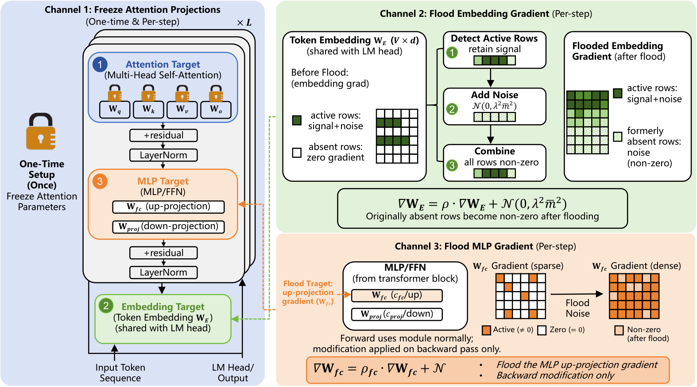

Lean 4 formalizations of the core theorems and propositions behind the privacy guarantees for Channels 1 and 2 are provided in the supplementary material.
Abstract
Gradient inversion attacks recover private training text from gradients shared in federated learning, posing a serious threat to collaborative model training. Through our analysis of transformer gradient structure, we identify three channels through which private token information leaks: the attention output projection gradient exposes a low-rank subspace that encodes input embeddings (Channel 1), the embedding gradient's row-norm sparsity directly reveals which tokens are present (Channel 2), and the MLP expansion gradient carries a recoverable subspace signal analogous to Channel 1 (Channel 3). State-of-the-art attacks exploit these channels analytically to achieve near-exact token recovery in seconds. Existing defences address at most one channel and either degrade model utility or leave the remaining structural signals intact. We introduce AEGIS (Attention-Embedding Gradient Isolation Shield), a lightweight defence that closes all three analytical channels with three backward-path operations requiring no architectural changes: freezing attention projection parameters eliminates Channel 1 by construction, calibrated noise injection into the embedding gradient destroys Channel 2's token-presence signal, and analogous per-block noise injection into the MLP expansion gradient masks Channel 3. The same masked gradient drives both the local optimiser step and the server export, so no clean signal is retained on either side. Evaluated across 11 models and six datasets, AEGIS reduces token recovery rates to near zero against a range of gradient inversion attacks, both analytical and optimisation-based, while preserving or improving model utility. We provide formal guarantees for Channels 1 and 2 and validate the full defence empirically against adaptive adversaries with complete knowledge of the mechanism.
Problem
Gradient inversion attacks recover private training text from gradients shared during federated LLM fine-tuning. Transformer gradients leak tokens through three analytical channels: the attention output-projection subspace, embedding-gradient row-norm sparsity, and the MLP expansion subspace. Existing defences close at most one of these channels.
Approach
AEGIS applies three backward-path operations without architectural changes. It freezes attention parameters to close Channel 1, injects calibrated dense noise into the embedding gradient to hide Channel 2, and applies analogous per-block noise to the MLP expansion gradient to mask Channel 3. The same masked gradient drives both the local optimiser step and the server export. The paper proves guarantees for Channels 1 and 2, with Lean 4 formalizations of the theorem cores supplied as supplementary material.

Fig. 1: Overview of the AEGIS mechanism. Channel 1 (the attention bottleneck) is neutrallised via freezing, while Channel 2 (embedding rows) and Channel 3 (the first MLP projection \mathbf{W}_{\mathrm{fc}} ) are obscured through mathematically calibrated dense Gaussian uniformisation. Downstream utility is maintained via the remaining unaffected trainable parameters (e.g., \mathbf{W}_{\mathrm{proj
Results
Across 11 models (110M–13B parameters) and six datasets, AEGIS reduces token recovery to near zero against analytical and optimisation-based attacks, including adaptive adversaries. Utility is preserved or improved. Step time is 1.10–1.22× undefended training, with lower peak memory and smaller gradient payload.
Defence
Step time
Peak memory
Dense payload
Undefended
1.00×
1.00×
1.00×
DP-SGD
2.31–7.53×
1.35–1.49×
1.00×
Pruning (90%)
1.34–1.84×
1.00×
1.00×
Soteria
1.02–1.07×
1.00×
1.00×
AEGIS
1.10–1.22×
0.76–0.90×
0.68–0.77×
Overhead comparison across GPT-2, GPT-2-XL, LLaMA-2-7B (multipliers vs. undefended)